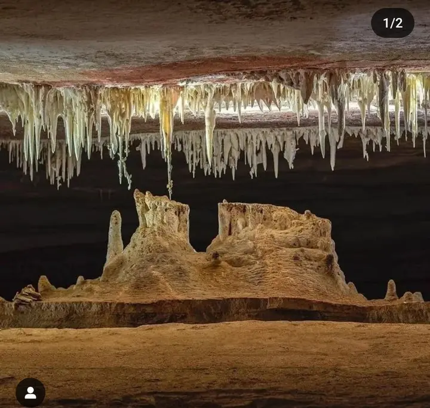
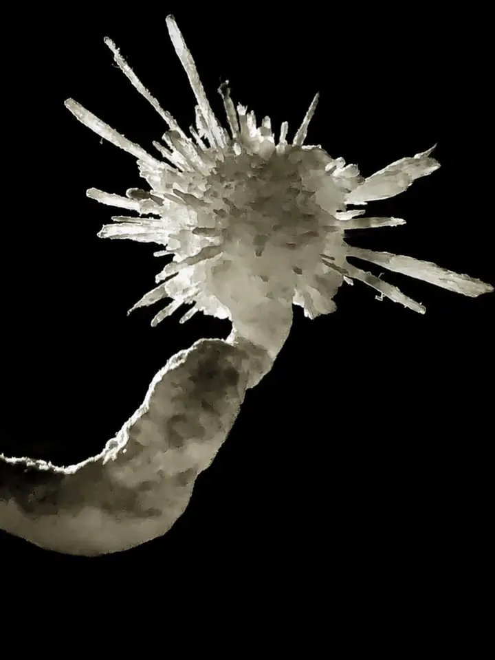
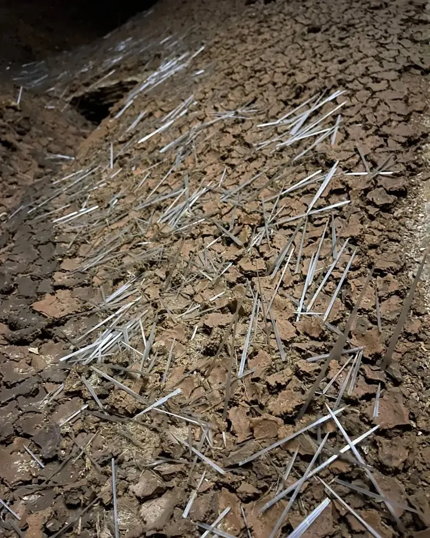
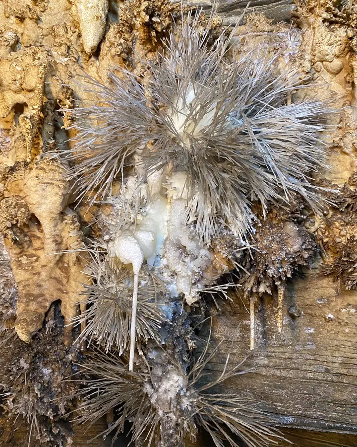

Primeira visita
R$40
Roteiro do Capitão
O mais curto e histórico: estalactites, estalagmites, colunas e cortinas no trecho explorado desde 1850.
- Duração~1h
- Percurso~700 m
- EsforçoLeve
Uma das cavernas mais completas do Brasil: flores de aragonita, agulhas de gipsita de até 70 cm e salões gigantes, com guia especializado do início ao fim.

Valores por pessoa, com guia, capacete e lanterna inclusos. Toque em um roteiro para ver os detalhes.
R$40
O mais curto e histórico: estalactites, estalagmites, colunas e cortinas no trecho explorado desde 1850.
R$70
Foco nas formações raras: flores de aragonita, helictites e agulhas de gipsita.
R$80
Bolha de calcita com flor de aragonita dentro, Salão dos Vulcões, helictite com flor na ponta e a réplica do Morro do Pai Inácio.
R$150
Reúne todos os roteiros anteriores e entrega a imersão mais ampla da Torrinha.
Valores informados pela equipe e sujeitos a confirmação no momento da reserva.
Uma concentração rara de formações que fazem da Torrinha referência em espeleoturismo no Brasil.

Uma das maiores pétalas do mundo e a terceira maior flor de aragonita já registrada.

Algumas peças chegam perto de 70 cm, entre as mais notáveis desse tipo de formação.

Estruturas que crescem em direções improváveis e criam um desenho quase escultórico.
Uma formação que lembra o símbolo da Chapada, além de colunas, cortinas e bolhas de calcita.
Toque nas fotos para ampliar.
Sem cadastro e sem pagamento pelo site: você combina tudo direto com a equipe.
Do Capitão (1h, R$ 40) ao Completo (até 2h30, R$ 150).
Informe a data e o número de pessoas. Reserva obrigatória só para grupos grandes e alta temporada.
Use calçado fechado e leve apenas água. Guia, capacete e lanterna são fornecidos.
“Foi uma experiência maravilhosa conhecer a gruta da Torrinha, guia gentil, atencioso e paciente, com muito conhecimento sobre o local.”Ana Maria, Brasília-DF
“Local sensacional, com atendimento atencioso, boa estrutura e guias acompanhando tudo com cuidado.”Arturo Costa
“Uma experiência incrível, com uma guia que explicou muito bem os detalhes e as curiosidades da caverna.”Experimentar o Mundo
“A organização da visita foi ótima e o roteiro completo entrega muita informação sem ficar cansativo.”Visitante, Chapada Diamantina
“Caverna Torrinha é um dos meus lugares prediletos, um lugar de paz, aconchego e leveza! Uma conexão incrível com a natureza.”Simone, Iraquara-BA
“Um lugar especial e pouco divulgado, que vale a visita para quem quer conhecer a região por conta própria.”Cleber “Sr. Guides” Guides
Conheça a experiência e o ambiente da caverna.
De R$ 40 (Roteiro do Capitão) a R$ 150 (Roteiro Completo) por pessoa. Guia, capacete e lanterna estão inclusos.
A reserva não é obrigatória, exceto para grupos grandes e alta temporada. Para garantir seu horário, chame a equipe no WhatsApp.
Para uma primeira visita rápida, o Roteiro do Capitão. Para ver as formações raras, Valery ou Raridades. Para a experiência mais ampla, o Roteiro Completo.
O terreno irregular e as escadas podem limitar pessoas com mobilidade reduzida, e crianças devem estar acompanhadas de um adulto responsável.
A visita é orientada por guia e a equipe é treinada para apoiar visitantes com claustrofobia. O conforto varia conforme o roteiro escolhido.
Calçado fechado e mãos livres. Durante o passeio, leve apenas água, para preservar as formações.
Sim. Dependendo do roteiro e do tempo disponível, é possível combinar com outros atrativos da Chapada, como Lapa Doce e Pratinha.
Zona rural de Iraquara, Chapada Diamantina, Bahia.
Endereço: Caverna Torrinha, zona rural de Iraquara - BA
Referências: 15 km do centro de Iraquara e 1 km da BA-122.
Distância de Lençóis: cerca de 64 km.
Horário: todos os dias, das 8h às 17h.
Abrir rota no Google MapsTire dúvidas sobre roteiros, grupos e melhor horário de visita.